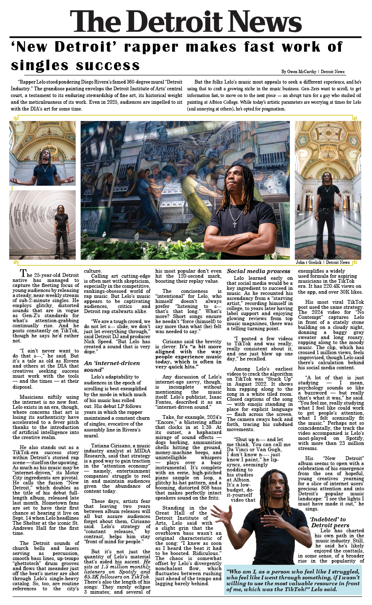
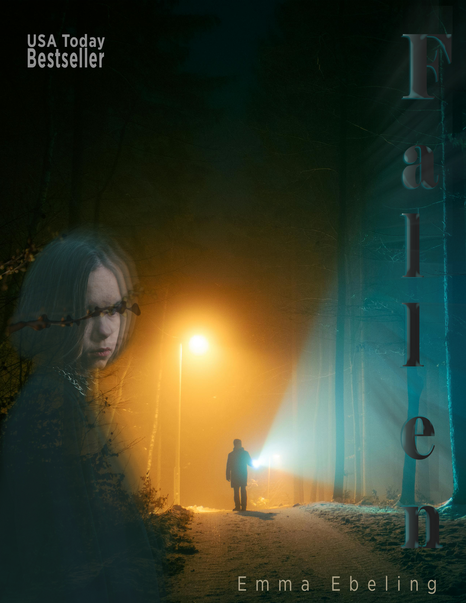
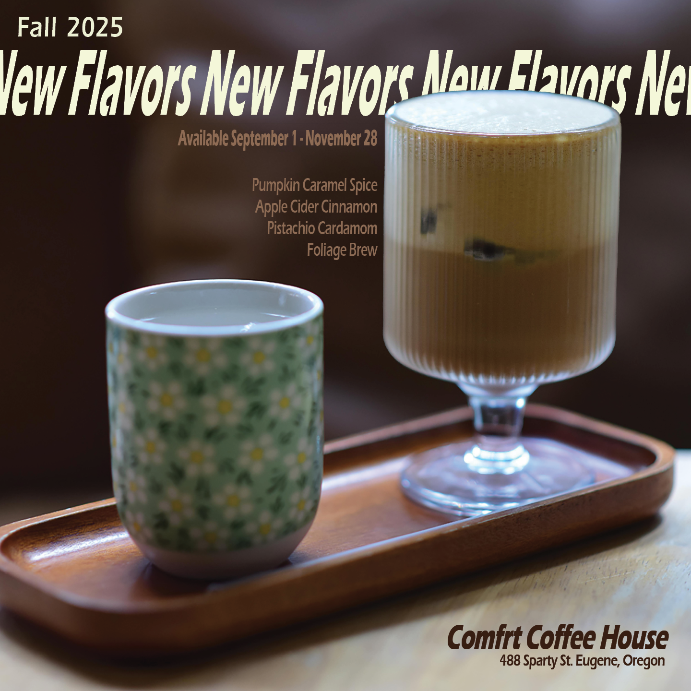
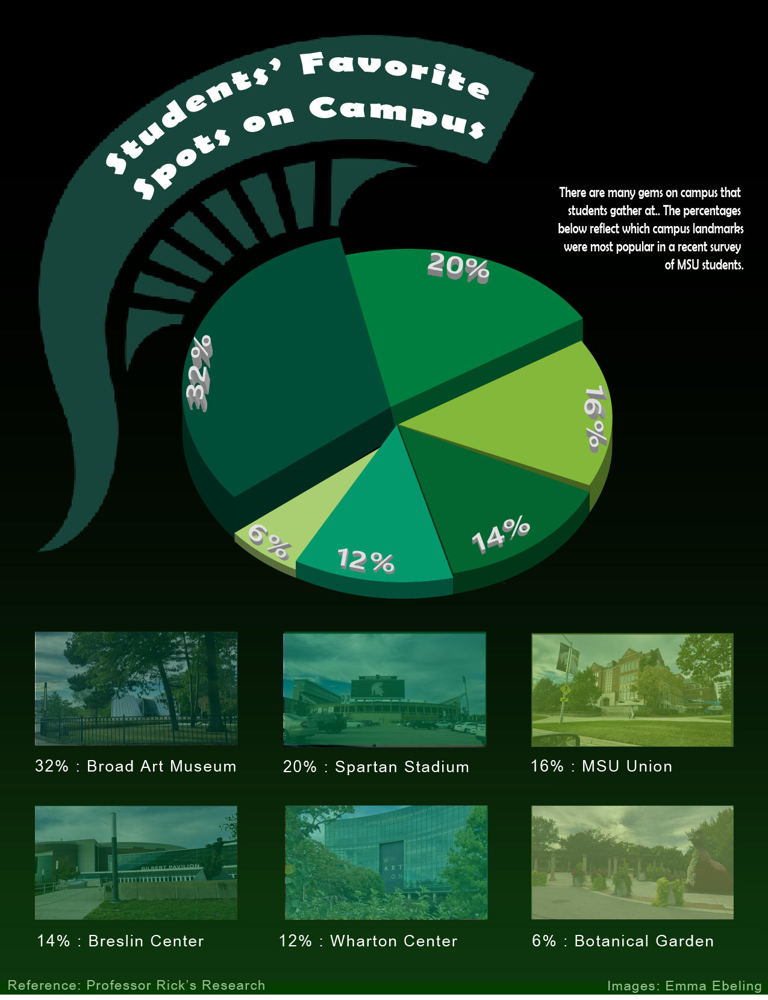
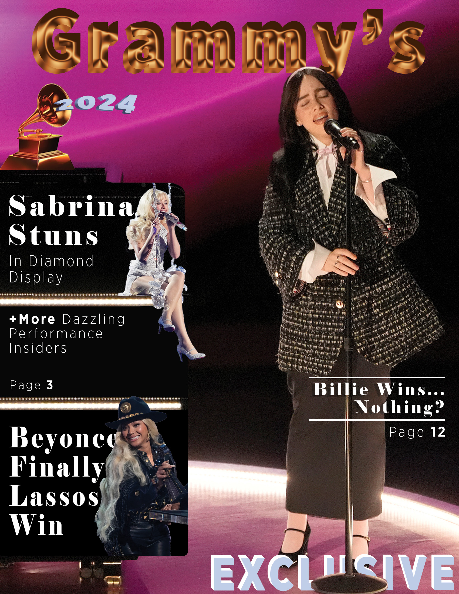
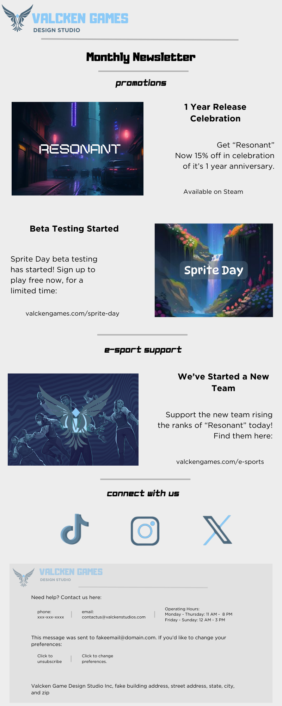
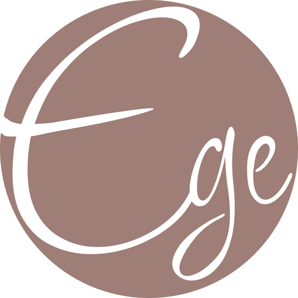
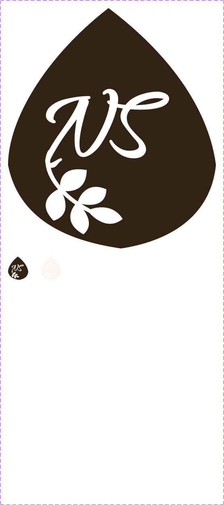
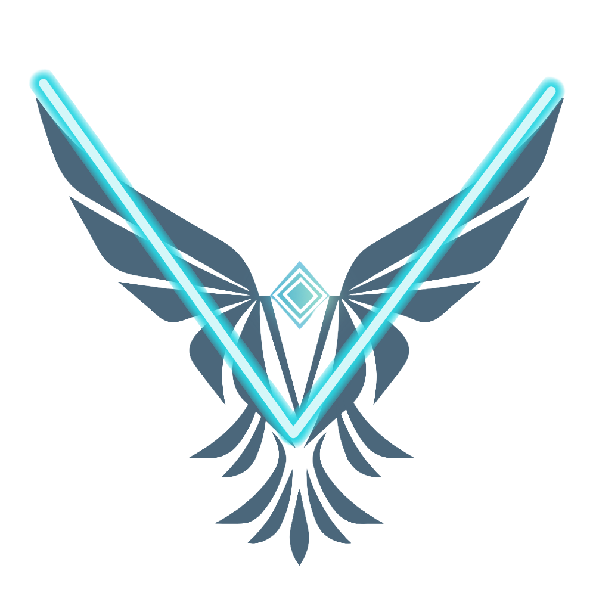

Editorial / PublicationEditorial design
Newspaper Design
A type-led editorial layout exploring hierarchy, pacing, and the rhythm of a printed page.
Explore projectField 02 / Visual communication
Visual identities, editorial compositions, and digital graphics—made to bring ideas into focus and give them a distinct point of view.
Selected projects

Editorial / PublicationEditorial design
A type-led editorial layout exploring hierarchy, pacing, and the rhythm of a printed page.
Explore project
Print / Book coverCover design
A cover concept translating a story into a memorable, considered visual composition.
Explore project
Digital / CampaignCampaign design
Social-first visual assets designed to make a campaign feel cohesive and easy to recognize.
Explore project
Information / DataInformation design
A visual approach to presenting data with legibility, structure, and a clear point of emphasis.
Explore project
Print / Art directionBranding & print
A cover design balancing imagery and type to create a distinctive editorial identity.
Explore project
Digital / NewsletterVisual communication
A newsletter layout bringing information and campaign visuals together in a scannable format.
Explore project
Identity / EGEIdentity
A personal mark and identity exploration for a digital-first design portfolio.
View image
Identity / NSLogo exploration
A logo concept exploring a clean, contemporary visual language.
View image
Identity / VGLogo exploration
A visual identity study designed to feel at home across digital applications.
View imagePrint design
A print layout project focused on organizing content into a readable, inviting menu.
Explore project